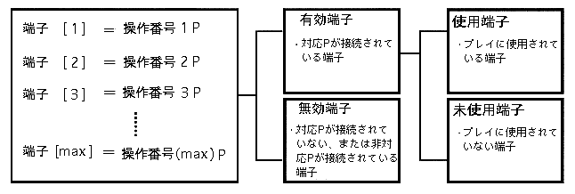

| 用語 | 説明 | 表記 |
|---|---|---|
| 対応入力ペリフェラル | ・あるアプリケーションで使用できる入力ペリフェラルのこと。 | 対応P |
| 未対応入力ペリフェラル | ・あるアプリケーションで使用できない。（対応していない）入力ペリフェラルのこと。 | 未対応P |
| 使用ペリフェラル | ・実際のプレイに使われている対応P（使用端子に接続されている対応P）のこと。 | 使用P |
| 本体端子 | ・本体の２つの入力端子のこと。本体の２つの入力端子をそれぞれ「本体端子1」「本体端子2」と呼ぶ。 | 本体端子n |
| 端子[n] | ・マルチターミナル6によって端子数が拡張されている場合、各端子に左詰めで番号を振って、「端子[n]」（nは番号）と呼ぶ。 （マルチターミナルの接続状態によって変わる） |
「端子[n]」 |
| 有効端子 | ・対応入力ペリフェラルが接続されている端子。 | 有効端子 |
| 使用端子 | ・実際のプレイに使用されている端子。有効端子の中からゲームプレイ毎に決定される。 | 使用端子 |
| 未使用端子 | ・実際のプレイに使用されていない端子。 | 未使用端子 |
| 無効端子 | ・有効でない端子のこと。 | 無効端子 |
| 操作番号 | ・プレイヤーの番号のこと。（1P、2P …)。 操作番号と使用端子とは1対1に対応する |
1P〜nP |
| ユーザポーズ | ・プレイヤー操作（スタートボタン押下）によるポーズ。 | |
| システムポーズ | ・システム（アプリケーション）によるポーズ。警告の表示などを伴う。プレイヤー操作によるポーズ処理（ユーザポーズ）と区別するためにこう呼ぶ。 |

※端子と操作番号は、１対１に対応する。
端子は、対応Ｐが接続されているかどうかで、有効端子と無効端子とに分かれる。
有効端子は、プレイに使用されるかどうかで使用端子と未使用端子とに分かれる。
「図１-１：端子状態の遷移図」（後掲）を参照のこと。